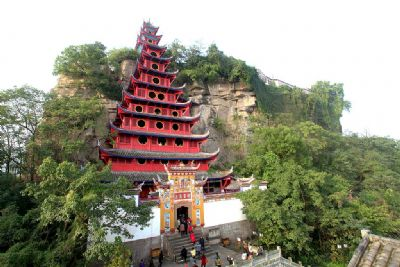
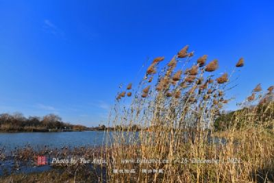
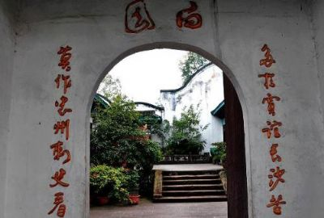

全国见义勇为城市
忠县
位于长江上游地区重庆东部，地处三峡库区腹心地带。
东邻万州，南接石柱，西界丰都、垫江，北壤梁平，是三峡
移民搬迁重点县。
至2014年11月，忠县幅员面积2187平方公里，境内呈"三
山两槽"地形，辖辖2个街道、21个镇、6个乡。有332个村和
31个居委会。以汉族为主，有土家族、回族、苗族等少数民
族。
忠县县城依山傍水，独具岛城风貌，是三峡库区唯一留
存的"半淹县城"。唐贞观八年唐太宗赐名忠州，民国二年设
忠县，是中国历史上唯一以"忠"字命名的州县城市。
忠县为全国粮食生产先进县，获得过"中国最具国际影
响力旅游目的地"、"全国生猪调出大县"、"全国见义勇为城
市"等荣誉称号。
|  | 石宝寨，国家级文物保护单位，国家4-旅游景区，位于县城忠州镇和万县市之间的长江北岸，它孤峰拔地，四壁如削，形如玉印，传说它是女娲炼石补天遗留下来的块五彩石，故称“石宝”。明末农民首领谭宏起义，会据此为寨，故名石宝寨。石宝寨建于明万历年间，距今四百多年 |
|  | 半城山水，满城橘香；一库碧水，绿波荡漾。美丽的中国柑橘城－忠县，位于重庆市东北部，东邻万州，南接石柱，西连丰都、垫江，北靠梁平。三峡水库蓄水到175米后，老县城三分之二将被淹没，通过移民搬迁建设，忠县将彰显“一城两岸、带状组团、山水园林、桥岛特色”的山水神韵。 三峡水库蓄水后，忠县长江两岸蜿蜒曲折，滩地、阶地和支流众多，形成29.71平方公里的消落带湿地 |
|  | 白公祠古建筑群含白公祠、太保祠、关帝庙、老官庙、冯氏华表。 白公祠,位于忠州镇城西,始建于明崇祯三年，清道光十年加以扩建，是为纪念忠州刺史,唐代大诗人白居易而建的祠堂（公元818年白居易任忠州刺史）,是与洛阳香山“唐少传白公墓祠”齐名的两座白居易祠之一。白居易，字乐天，晚年号香山，唐代大诗人,官至翰林学士，是中国文学史上负有盛名且影响深远的唐代诗人和文学家，有“诗魔”和“诗王”之称。他有开明的政治态度,在他的诗文中尖锐地揭露和抨击官僚的荒淫 |